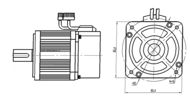

Конструирование и охлаждение серводвигателя (сервомотора), различного электрооборудования.
Первым этапом для конструирования будет проработка общих видов машины. Для начала один поперечный и продольный. Сразу стоит подумать, как максимально повысить надежность и добиться экономичной работы, обслуживать должно быть удобно, а трудоёмкость изготовления должна быть как можно ниже, что опять же напрямую связано с экономичностью. Прорабатываются возможности по габаритным размерам и весу оборудования.

Технологичность механизма и используемое на производстве оборудование во многом влияют на трудоёмкость изготовления оборудования. Чтобы организовать производство наиболее эффективно лучше сразу на этапе разработки документации согласовать производственный процесс с технологами, что в любом случае, обязательно. Главное, чтобы конструктор и технолог действительно работали в единой связке. Если требования к конструкциям противоречат друг другу, то можно взять в расчёт экономическое сравнение вариантов исполнения конструкции.
В случае серийного производства, технологичности конструкций следует уделить первостепенное значение. При работе с серийным производством изготовитель может заниматься широким спектром унификации узлов и деталей, а может выбрать узкую специализацию и ограничить общее количество марок и типоразмеров оборудования, это делает выгодной значительную автоматизацию, использование конвейеров, агрегатных станков. Всё это положительно сказывается на стоимости и трудоёмкости изготовления, затраты снижаются.
Сама конструкция определяется требованиями нормативных документов. Основные выходные данные оборудованиями должны соответствовать ГОСТам, качество материалов или полуфабрикатов и их основной список также нормируются, для отрасли электрооборудования достаточно части материалов и типоразмеров, которые обозначены в нормативах. Это упрощает доставку и производственный процесс. Это привело к созданию отраслевых стандартов и стандартов предприятий, которые определяют сокращённый ассортимент материалов и деталей c учётом производственных условий. Особенно это относится к проводам, кабелям и крепежным деталям.
Внешний короб в виде станины и подшипниковых щитов выполняет роль механической защиты, кроме оборудования на постоянном токе, для которого стальная станина выполняется монолитной и сразу служит деталью магнитопровода. Внешние оболочки оборудования выполняют в большей степени стальными. А в маломощном оборудовании оболочка может выполняться из сплавов алюминия или иметь смешанную конструкцию, если есть цель – повысить прочность. Смешанная конструкция для маломощного оборудования представляет собой стальные подшипниковые щиты и алюминиевую станину. А в механизмах, у которых мощность выше, делается сварная конструкция оболочки из стали.
В оборудовании, например, серводвигателях меньших размеров меньше разница между защищенным и закрытым типами в плане охлаждения. С увеличением размера оборудования этот параметр начинает различаться сильнее.